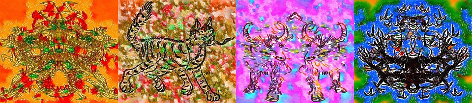

← Async Art — living works · all collections
by Hulki Okan Tabak · Async Art Master #1978 · four-phase · time rule: UTC
Updates four times a day to reflect sunrise / day / sunset / night cycles.

Sunrise 06:00–06:59 · Day 07:00–17:59 · Sunset 18:00–18:59 · Night 19:00–05:59 (UTC)
The full-size files live on IPFS; each is linked on three public gateways, in the order to try them (gateway.pinata.cloud, ipfs.io, dweb.link). Every line says what our own check found: 5 we keep this file pinned, 5 our own copy, pinned here and verified on upload.
bafybeib7hxy5k… gateway.pinata.cloud · ipfs.io · dweb.link — our own copy, pinned here and verified on upload, checked 2026-09-22bafybeiahnrsec… gateway.pinata.cloud · ipfs.io · dweb.link — our own copy, pinned here and verified on upload, checked 2026-09-22bafybeifhuv64w… gateway.pinata.cloud · ipfs.io · dweb.link — our own copy, pinned here and verified on upload, checked 2026-09-22bafybeibdsdege… gateway.pinata.cloud · ipfs.io · dweb.link — our own copy, pinned here and verified on upload, checked 2026-09-22bafybeidrhdxvr… gateway.pinata.cloud · ipfs.io · dweb.link — our own copy, pinned here and verified on upload, checked 2026-09-22QmQqoyP9hgVD8c… gateway.pinata.cloud · ipfs.io · dweb.link — we keep this file pinned, checked 2026-09-23 09:13QmSEaJNqCXYYci… gateway.pinata.cloud · ipfs.io · dweb.link — we keep this file pinned, checked 2026-09-23 09:13QmSEaJNqCXYYci… gateway.pinata.cloud · ipfs.io · dweb.link — we keep this file pinned, checked 2026-09-23 09:13QmNzX1LqEFpRLn… gateway.pinata.cloud · ipfs.io · dweb.link — we keep this file pinned, checked 2026-09-23 09:13QmXpqKWmCNHdix… gateway.pinata.cloud · ipfs.io · dweb.link — we keep this file pinned, checked 2026-09-23 09:13QmXyogMHMNtHQt… gateway.pinata.cloud · ipfs.io · dweb.link — we keep this file pinned, checked 2026-09-23 09:13There was a Time long time ago but yet not that far away when God Beasts roamed the forest and the mountain. When Jingdi sang, continents cheered with rampant ecstasy and when Long hoarded gold was not to be trifled with. A time of Elders, a time for dimunitive peace that led to chaos and the birth of the Age of Man. ... Cast: Dashe Master Serpent Shuang Tou Double Headed Gu Hu Ancient Tiger Laoren Elder Man ... Shenshou (God Beasts) I by Hulki Okan Tabak Inspired from Shan Hai Jing, Minted on Async Art, June 2021
async.art · OpenSea · Etherscan
Generated archive pages. Content identifiers point to the public IPFS network.